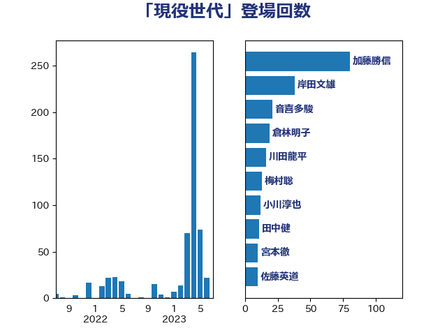

単語「現役世代」

| 加藤勝信 | 自由民主党 | 80 回 |
| 岸田文雄 | 自由民主党 | 38 回 |
| 音喜多駿 | 日本維新の会 | 21 回 |
| 倉林明子 | 日本共産党 | 19 回 |
| 川田龍平 | 立憲民主党 | 16 回 |
| 梅村聡 | 日本維新の会 | 13 回 |
| 小川淳也 | 立憲民主党 | 12 回 |
| 田中健 | 国民民主党 | 11 回 |
| 宮本徹 | 日本共産党 | 10 回 |
| 佐藤英道 | 公明党 | 10 回 |
| 大西健介 | 立憲民主党 | 9 回 |
| 土田慎 | 自由民主党 | 9 回 |
| 井坂信彦 | 立憲民主党 | 9 回 |
| 池下卓 | 日本維新の会 | 8 回 |
| 田村智子 | 日本共産党 | 7 回 |
| 野間健 | 立憲民主党 | 6 回 |
| 若松謙維 | 公明党 | 6 回 |
| 田村まみ | 国民民主党 | 6 回 |
| 泉健太 | 立憲民主党 | 6 回 |
| 古屋範子 | 公明党 | 6 回 |
| 高木真理 | 立憲民主党 | 5 回 |
| 猪瀬直樹 | 日本維新の会 | 5 回 |
| 浅田均 | 日本維新の会 | 5 回 |
| 早稲田ゆき | 立憲民主党 | 5 回 |
| 後藤茂之 | 自由民主党 | 5 回 |
| 天畠大輔 | れいわ新選組 | 5 回 |
| 金村龍那 | 日本維新の会 | 4 回 |
| 新谷正義 | 自由民主党 | 4 回 |
| 岩谷良平 | 日本維新の会 | 4 回 |
| 大岡敏孝 | 自由民主党 | 4 回 |
| 高木宏壽 | 自由民主党 | 3 回 |
| 鈴木俊一 | 自由民主党 | 3 回 |
| 足立康史 | 日本維新の会 | 3 回 |
| 西村康稔 | 自由民主党 | 3 回 |
| 西岡秀子 | 国民民主党 | 3 回 |
| 藤田文武 | 日本維新の会 | 3 回 |
| 芳賀道也 | 国民民主党 | 3 回 |
| 沢田良 | 日本維新の会 | 3 回 |
| 木村英子 | れいわ新選組 | 3 回 |
| 小池晃 | 日本共産党 | 3 回 |
| 小寺裕雄 | 自由民主党 | 3 回 |
| 堀場幸子 | 日本維新の会 | 3 回 |
| 吉川沙織 | 立憲民主党 | 3 回 |
| 高橋千鶴子 | 日本共産党 | 2 回 |
| 西銘恒三郎 | 自由民主党 | 2 回 |
| 窪田哲也 | 公明党 | 2 回 |
| 石川香織 | 立憲民主党 | 2 回 |
| 石井啓一 | 公明党 | 2 回 |
| 田畑裕明 | 自由民主党 | 2 回 |
| 甘利明 | 自由民主党 | 2 回 |
| 玉木雄一郎 | 国民民主党 | 2 回 |
| 浜口誠 | 国民民主党 | 2 回 |
| 河野太郎 | 自由民主党 | 2 回 |
| 山岸一生 | 立憲民主党 | 2 回 |
| 小倉將信 | 自由民主党 | 2 回 |
| 大塚耕平 | 国民民主党 | 2 回 |
| 吉田久美子 | 公明党 | 2 回 |
| 吉田とも代 | 日本維新の会 | 2 回 |
| 住吉寛紀 | 日本維新の会 | 2 回 |
| 伊藤孝恵 | 国民民主党 | 2 回 |
| 伊佐進一 | 公明党 | 2 回 |
| こやり隆史 | 自由民主党 | 2 回 |
| 高木陽介 | 公明党 | 1 回 |
| 須藤元気 | 無所属 | 1 回 |
| 青木愛 | 立憲民主党 | 1 回 |
| 阿部司 | 日本維新の会 | 1 回 |
| 長友慎治 | 国民民主党 | 1 回 |
| 野田聖子 | 自由民主党 | 1 回 |
| 野中厚 | 自由民主党 | 1 回 |
| 遠藤良太 | 日本維新の会 | 1 回 |
| 谷公一 | 自由民主党 | 1 回 |
| 紙智子 | 日本共産党 | 1 回 |
| 稲富修二 | 立憲民主党 | 1 回 |
| 秋野公造 | 公明党 | 1 回 |
| 神谷政幸 | 自由民主党 | 1 回 |
| 神谷宗幣 | 参政党 | 1 回 |
| 比嘉奈津美 | 自由民主党 | 1 回 |
| 武部新 | 自由民主党 | 1 回 |
| 櫛渕万里 | れいわ新選組 | 1 回 |
| 森本真治 | 立憲民主党 | 1 回 |
| 梅谷守 | 立憲民主党 | 1 回 |
| 柴愼一 | 立憲民主党 | 1 回 |
| 本庄知史 | 立憲民主党 | 1 回 |
| 打越さく良 | 立憲民主党 | 1 回 |
| 志位和夫 | 日本共産党 | 1 回 |
| 岸真紀子 | 立憲民主党 | 1 回 |
| 岸信千世 | 自由民主党 | 1 回 |
| 宗清皇一 | 自由民主党 | 1 回 |
| 塩川鉄也 | 日本共産党 | 1 回 |
| 堤かなめ | 立憲民主党 | 1 回 |
| 和田義明 | 自由民主党 | 1 回 |
| 吉良よし子 | 日本共産党 | 1 回 |
| 加藤鮎子 | 自由民主党 | 1 回 |
| 井上哲士 | 日本共産党 | 1 回 |
| 中島克仁 | 立憲民主党 | 1 回 |
| 三浦信祐 | 公明党 | 1 回 |
| 三木圭恵 | 日本維新の会 | 1 回 |
| 三ッ林裕巳 | 自由民主党 | 1 回 |